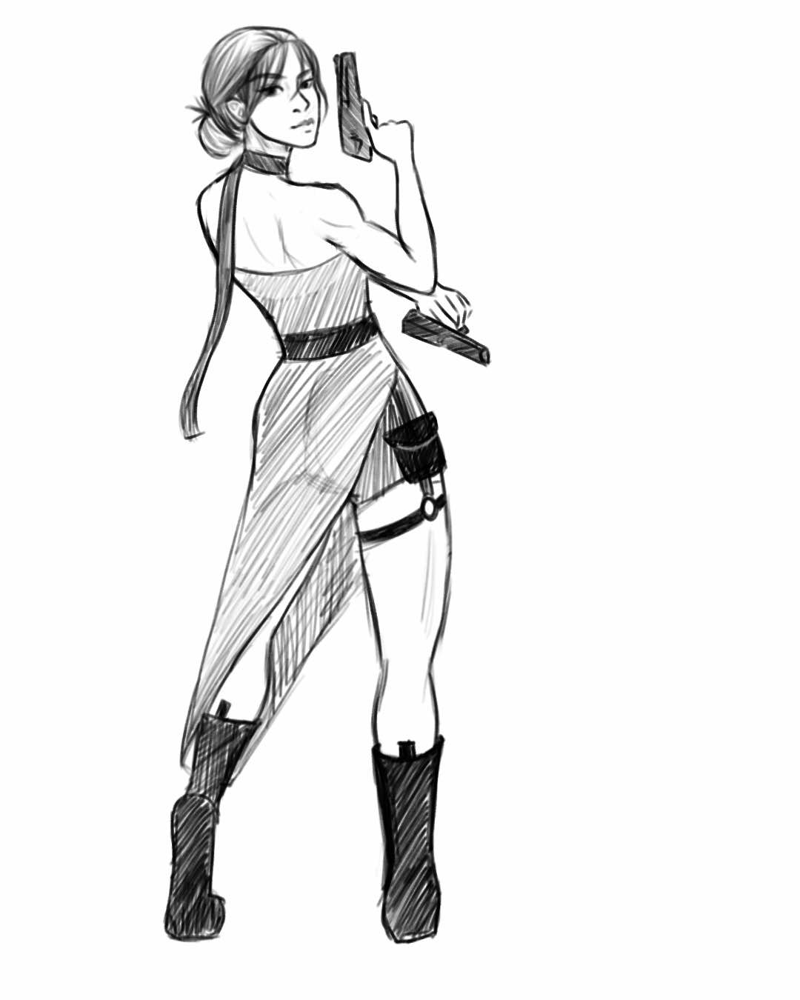
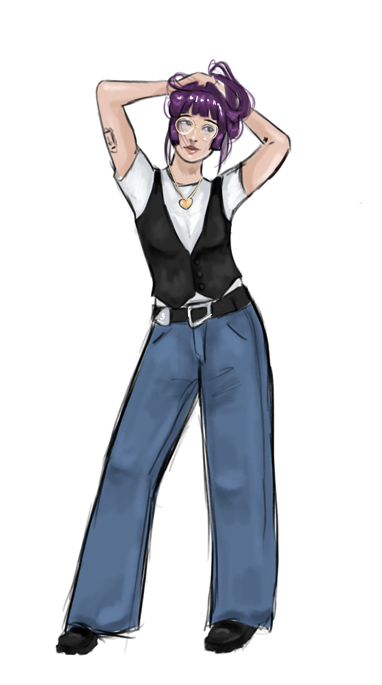

Mei Lin Lee-Stahr
character artist + visual development
Short Film: When You Give a Cat a Lemon
Created for the 2nd Annual Slug48 Film Competition
Directed by Mei Lin Lee-Stahr and Calleigh Hoang
Won "Best Use of Required Dialogue" ("What just happened?")
Official Selection for Mill Valley Film Festival 2026
Short Film: A Letter to Qianjiang - A Chinese American Adoptee's Journey of Reconnection
In my thesis film for my Film and Digital B.A. at UC Santa Cruz, I explore my adopted identity, asking questions about the community I am a part of, yet, have always felt disconnected from. I reconnect with other adoptees from the same city as me and ask about their own stories, ultimately finding the places where our paths overlap, and diverge all at the same time.